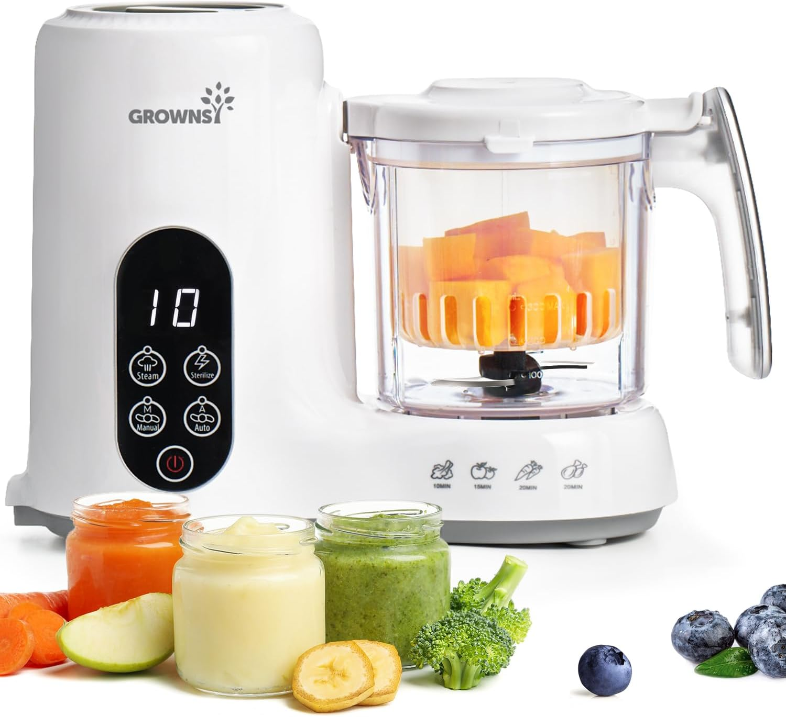
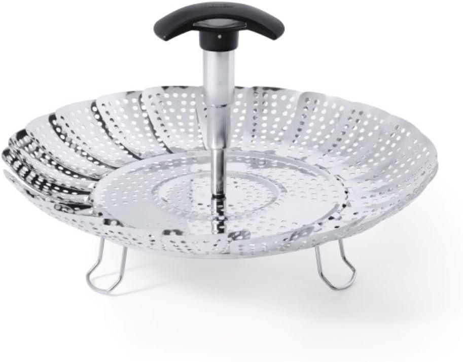
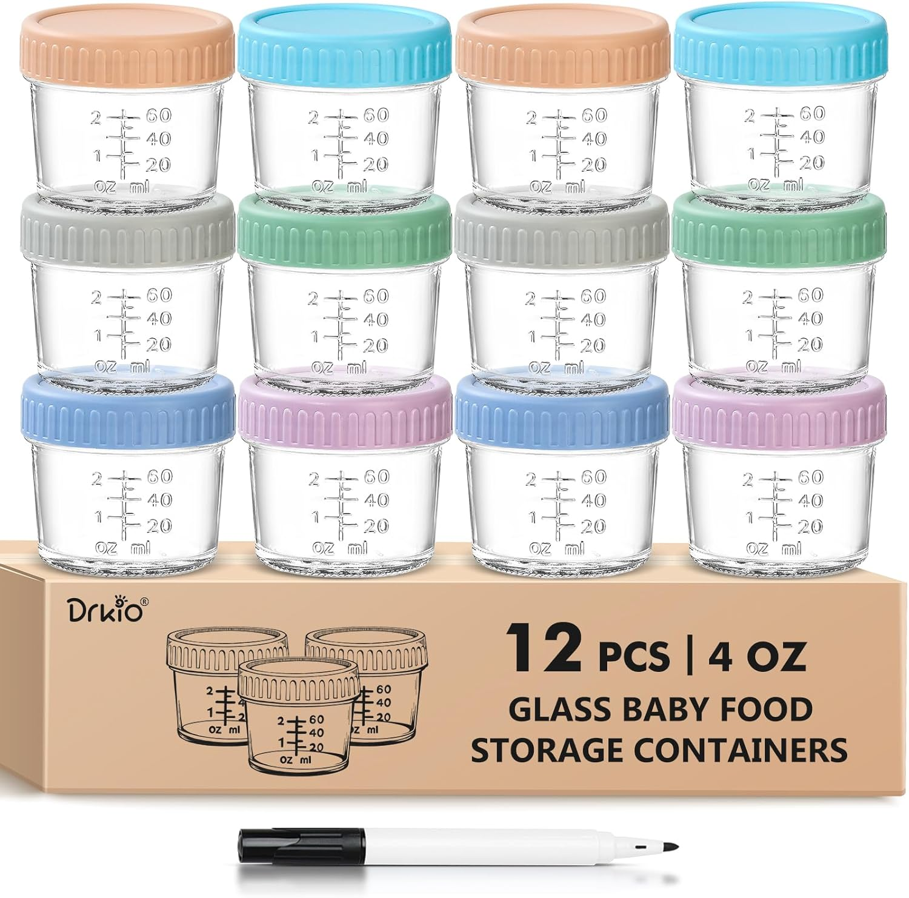
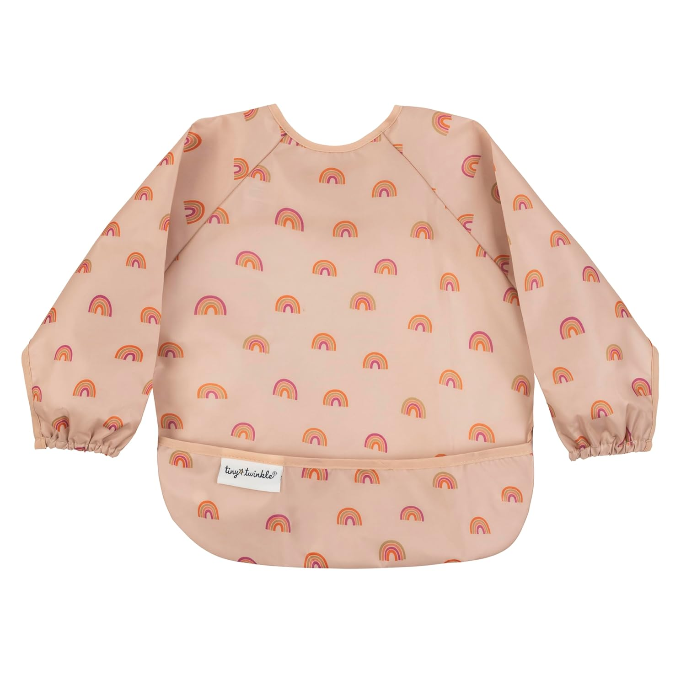

Every new turn you cross with a baby feels like another leap into the unknown — solids was genuinely my biggest stressor of them all. I don't know why, because it honestly hasn't been that hard, but I built so much anxiety around it. Here's a quick guide on the minimalist things you need to at least get running with purées.
The first thing I'll say: skip the baby food maker. I know they look appealing, and I was tempted — but my mom friends talked me out of it, and they were right. Purées are a short phase before babies start needing more texture anyway, so you're buying something that only makes small batches for a window that passes fast.

What you actually need is a simple veggie steaming basket and a pot with a lid. Most people already have a pot, but if you don't, this one is cheap and does the trick. Fill it with 1–2 inches of water, drop in the basket and your veggies, bring to a boil with the lid on, and you'll have perfectly steamed vegetables in minutes. From there, just use whatever blender you already have at home — I used a Vitamix for larger batches and a NutriBullet for smaller ones. Add a little water or breast milk and blend to your desired consistency. That's genuinely it.

For storage, I keep things simple: small glass jars for the fridge and freezer trays for anything I want to keep longer. One note — I'd skip the 12-pack of jars. Purées only last so long in the fridge, and I've never needed more than six at a time.

The last thing, and honestly a non-negotiable for me: long-sleeve bibs. All praise to the moms who can handle the shirtless, food-everywhere chaos at mealtime — but that's not me. I needed some semblance of order. I only bought two to save money and it's been totally manageable. These go on before every single meal.

Oh, and these spoons have been great too — soft enough for new eaters and easy for little hands to grab onto.
This is almost exactly everything that was in my Amazon cart at 5 months as I was gearing up to start purées, and it turned out to be everything I needed. Hoping it saves any moms in the same boat some time figuring out what to actually get — because the mental load of researching all of this when you're already sleep-deprived is real.